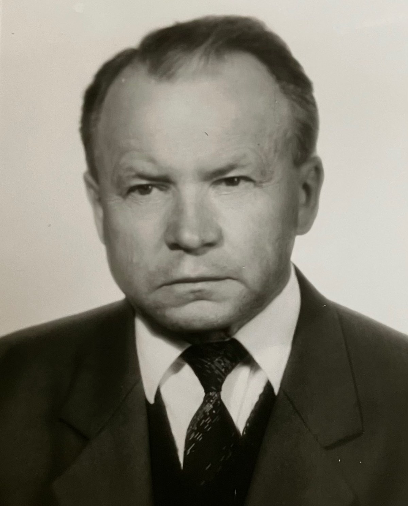
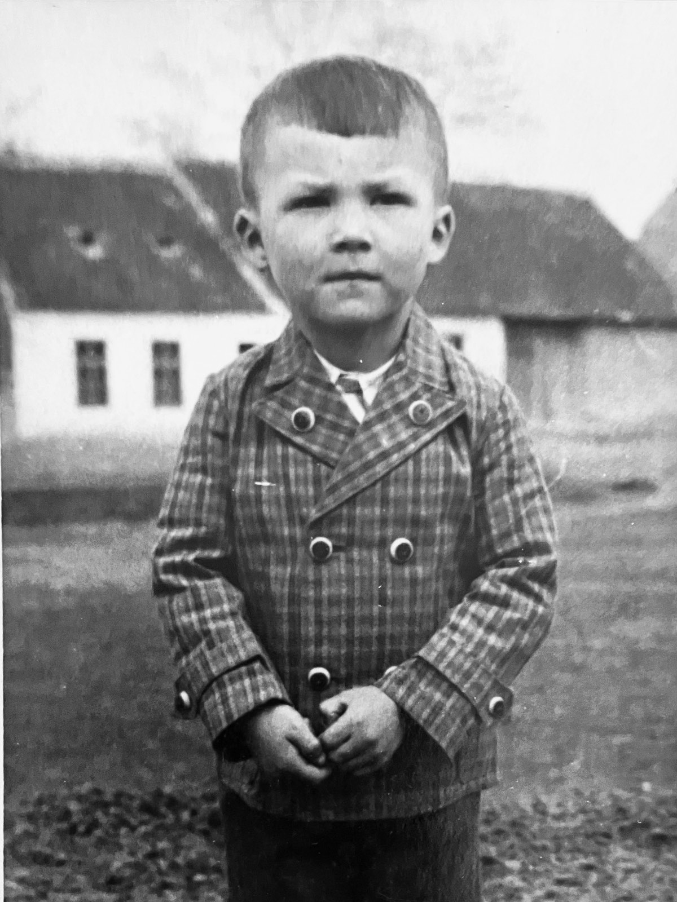
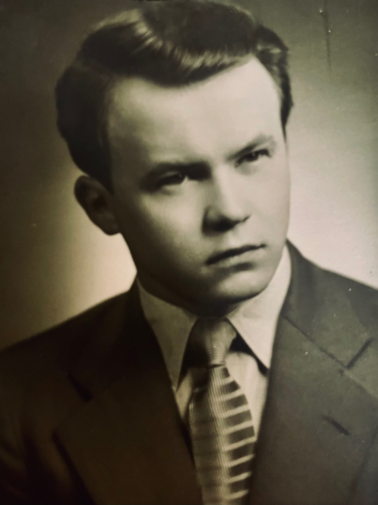
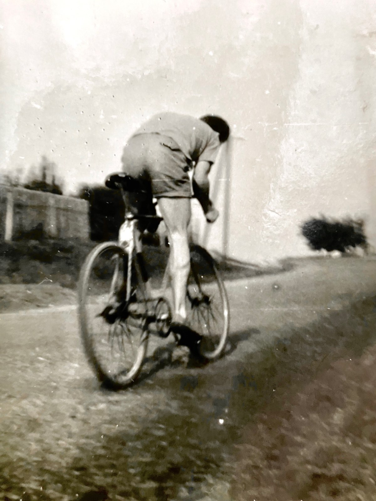
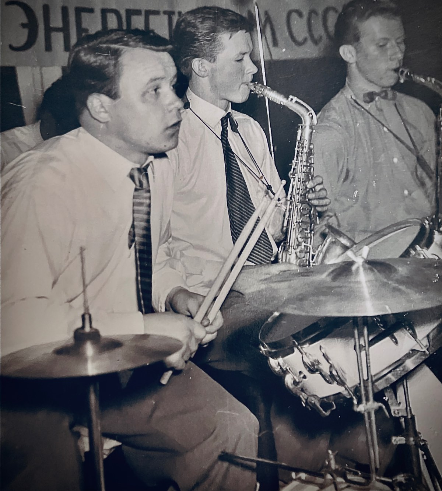
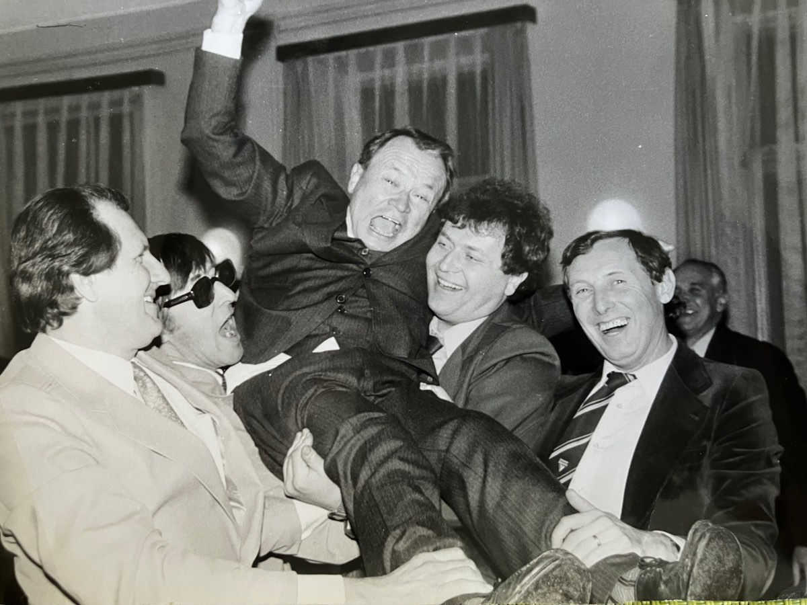
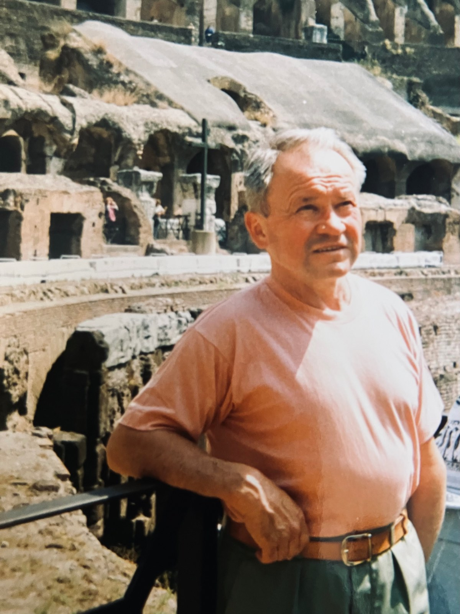
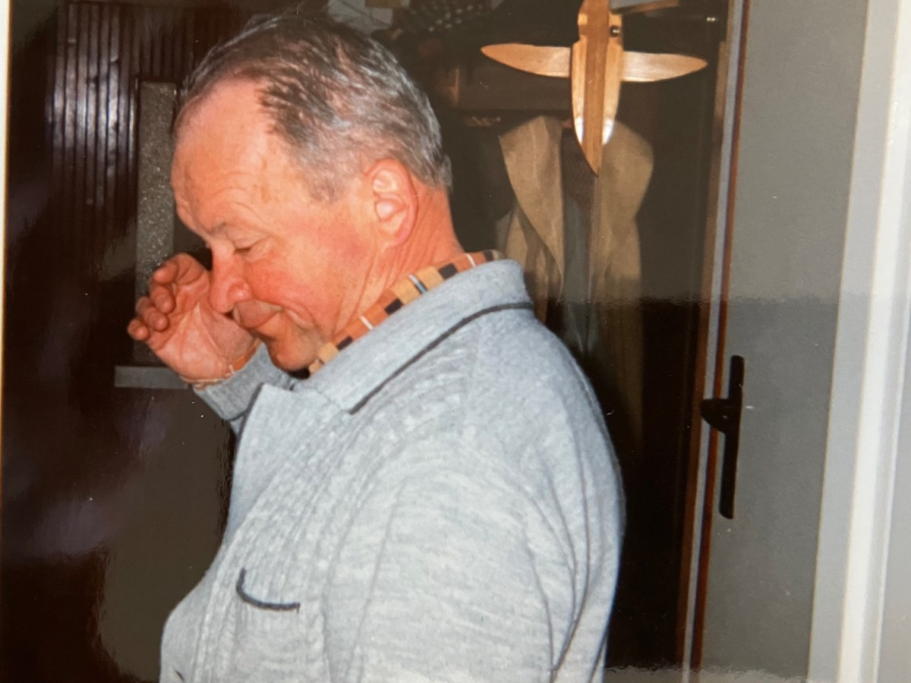
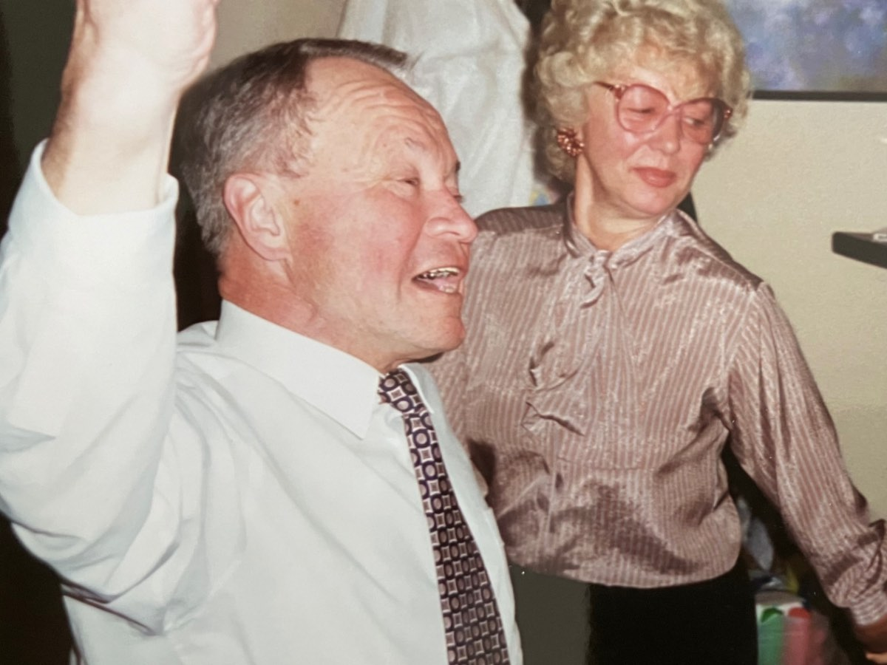
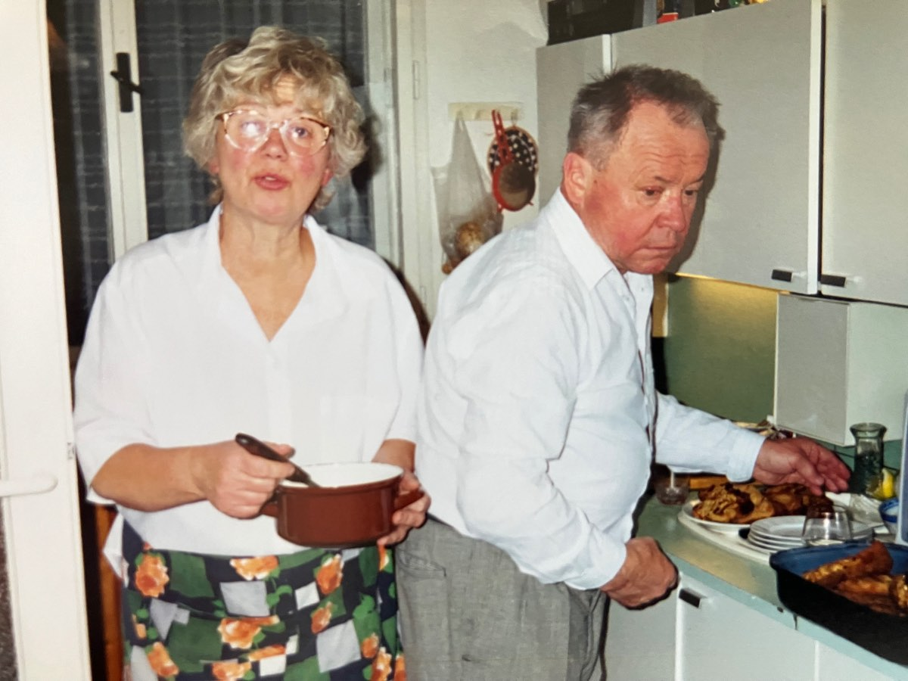

Ing.Milan Novotný
1937 – 2023
Život
Muzikant a vápeník
Milan Novotný se narodil v Brně do učitelské rodiny, která tou dobou působila ve Starovičkách. Po skončení 2. světové války se přestěhoval s rodiči do Líšně, kde dokončil základní školu. Následovalo studium na Francouzském reálném gymnáziu Opuštěná. Franouzština jej velmi bavila, vynikal v ní a některé francouzské texty si pamatoval po celý život. Po gymnáziu začla studovat na Stavební fakultě VUT v Brně obor Stavební hmoty. Při studiu se mimochodem jako hráč na bicí stal členem hudebního tělesa - swingového big bandu působícího v právě v Líšni. Toto amatérské hudební uskupení úspěšně procházelo celou řadou hudebních soutěží. Počátkem šedesátých let se v Líšni seznámil se svou budoucí ženou Věrou Slavíkovou. V roce 1965 se jim narodil syn Michal, v roce 1971 druhý syn Marek. Tou dobou již Milan působil ve vápence v Čebíně nejprve jako vedoucí provozu, později jako její ředitel. Čebínská vápenka se stala nedílnou součástí jeho života, pracoval v ní přes 20 let. Měl mezi spolupracovníky řadu přátel, do Čebína se vždy rád vracel i po odchodu na odpočinek. V penzi rád chodil na procházky do lesa, věnoval se vnoučatům. Pečoval o své zdraví, denně cvičil, dobře plaval. Staral se o dům, za příznivého počasí seděl na zahradě a svačil oblíbenou kávu a tatranku.Záliby a zajímavosti
Co jej bavilo
Jako bývalý hudebník (bicí, klavír) měl rád swing, zejména velké orchestry Glenna Millera, Karla Vlacha či Melody Makers. Miloval Českomoravskou vysočinu, až do pozdního věku si každoročně užíval týden na Milovech. Bavilo jej být ve společnosti, nevynechal jedinou příležitost zatančit si. Byl pilným čtenářem a častým návštěvníkem líšeňské veřejné knihovny.
Fotografie
Ze života









